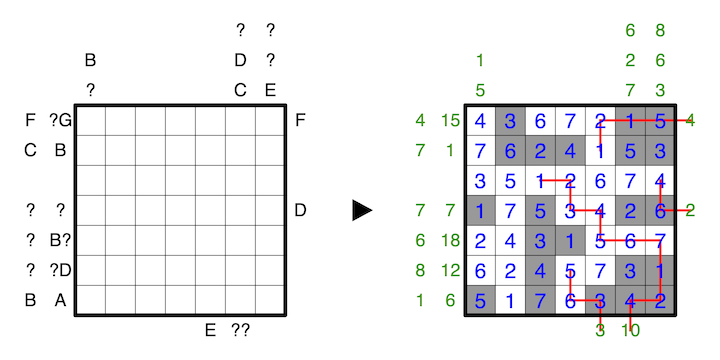

Shade some cells such that all unshaded cells are orthogonally connected, and all orthogonally connected groups of shaded cells touch the edge of the grid.
Clues outside the grid to the top and left indicate the sums of connected groups of either shaded or unshaded numbers in the respective row or column, in order, where numbers in cells with the opposite shading serve as delimeters between groups. All the columns are for one of either shaded or unshaded, and all of the rows are for whichever type of shading the columns is not.
At any of the clues to the right and bottom of the grid, one must imagine Sisyphos pushing a boulder up a hill. Each number combined with its shading represents a distinct level of elevation; all unshaded cells are of higher elevation than shaded cells, the unshaded 1 being the highest elevation and the shaded 9 being the lowest elevation, and so on. The clue number indicates the total number of cells Sisyphos will push the boulder up the hill before he falls back down (and is doomed to repeat for eternity). At each cell, Sisyphos will always choose to travel to the cell with the highest elevation of his (up to) three possible orthogonal choices, and if there is ever a tie, he will always travel straight ahead. Furthermore, Sisyphos will never choose to travel to a cell that is of lower elevation than his current location, as that is making backwards progress. If at any cell Sisyphos can no longer make forward progress, he falls and the path is over.
The letters A to G replace numbers from 0 to 9, and no two letters may replace the same number. A question mark can be any number from 0 to 9, and for all clues, none may have a leading zero.
A 1-7 example is provided:
